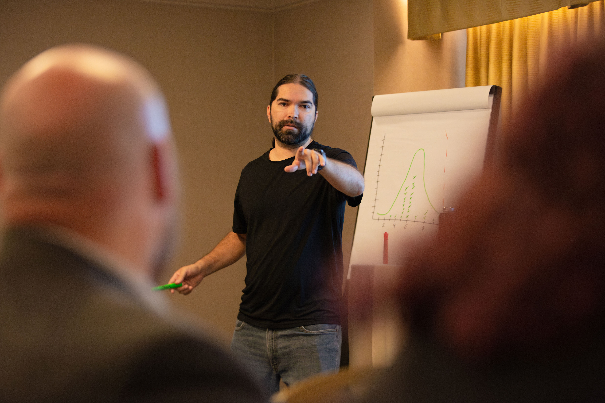
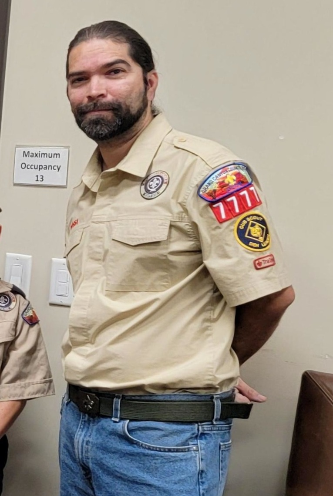

Training & Institutional Leadership
Core Expertise & AI Integration
I regularly facilitate cross-departmental and cross-institutional projects, leverage Prosci Change Management, and apply Lean Six Sigma (LSS) methodologies to support change initiatives campus-wide.
After developing an introductory AI Module available to all UCSD staff, my current focus centers on blending Lean Six Sigma and AI to ensure teams reach optimal benefits from each tool set.
Media Gallery
Check out examples and learn more about Lean, AI, and internal consulting through the videos below:
 Playlist
Playlist
 Playlist
Video
Video
Playlist
Video
Video
) Video
Video
 Video
Video
 Video
Video
Community AI Workshops & Outreach
Passionate about making technology accessible, I deliver complimentary presentations at local public libraries to demystify artificial intelligence for the general public.

Public Library AI Sessions
These free sessions focus on practical introductory AI skills, covering foundational concepts, effective prompt engineering, and basic AI agent building to help community members leverage AI tools in their daily lives.
Beyond the Office: Life, Roots, and Community
Beyond spreadsheets and strategy, my life is defined by where I came from, the communities I build, and a deep commitment to putting people first.

Rooted in tradition and heritage.
Roots & Culture
Growing up in the border town of San Diego, California, in an economically challenged neighborhood, shaped my perspective early on. Both of my parents are of Hispanic heritage—a rich background that took me time to fully embrace, but one that now grounds everything I do. Living through those early challenges sparked a drive to give back. Today, I actively seek ways to leverage my professional skills to support local libraries, community event centers, and youth programs so community members can learn and grow alongside me.

Leadership, mentorship, and creative engagement.
Leadership & Community
Mentorship and community-building have always been central to my journey. As a Tiger leader, Arrow of Light leader, and event planner in Scouting, I’ve loved bringing hands-on technology—like setting up green screens—to help kids fulfill advancement requirements while playing with creative tech. That drive started back at UC San Diego, where I founded a student organization for the video game community after noticing a lack of inclusive spaces on campus. Creating a home where gaming enthusiasts could engage, build friendships, and develop interpersonal skills remains one of the highlights of my life.
Where Personal Meets Professional
My philosophy on continuous improvement is simple: it requires deep humility. Real growth isn't about rushing to quick fixes; it's an introspective, ongoing commitment to being better, delivering better, and acting as a servant leader. Ultimately, I believe in being people-first. While my career is meaningful, it isn't who I am at my core—above all, I am a father, a son, a brother, and a friend.
Education & Certifications
- Lean Six Sigma Black Belt – UC San Diego Extension
- Prosci Change Management Certified
- PMP Certified – Coursera
- Process Mapping Certified – Nintex (Promapp)
- Bachelor of Arts in Theater Arts – UC San Diego